[47]:
import numpy as np
import matplotlib.pyplot as plt
import nibabel as nib
import sys
sys.path.insert(1, '/host/cassio/export03/data/opt/hippunfold_toolbox/hippunfold_toolbox')
import utils
import plotting
import os
import glob
import csv, os
import pandas as pd
import nilearn
from nilearn import surface
import cmcrameri.cm as cmc
import warnings
warnings.filterwarnings('ignore')
from nilearn.glm.first_level import make_first_level_design_matrix
from nilearn.glm.first_level import run_glm
from nilearn.glm.contrasts import compute_contrast
from brainspace.mesh.mesh_io import read_surface
from brainspace.plotting import plot_hemispheres
from brainspace.datasets import load_group_fc, load_parcellation, load_conte69
from brainspace.utils.parcellation import map_to_labels
[48]:
# 1. specify the subjects and directories
subs = ['PNC002', 'PNC003', 'PNC006', 'PNC007', 'PNC009', 'PNC010', 'PNC015','PNC016', 'PNC018','PNC019']
micapipe_dir = '/data/mica3/BIDS_PNI/derivatives/micapipe_v0.2.0'
micapipe_raw = '/data/mica3/BIDS_PNI/rawdata'
hippunfold_dir='/data/mica3/BIDS_PNI/derivatives/hippunfold_v1.3.0_supersession/hippunfold'
tmp_dir = 'tmp_func'
micapipe='/data_/mica1/01_programs/micapipe-v0.2.0'
# 2. Prepare data and analysis parameters
ses = '01'
hemis = ['L','R']
labels= ['hipp']#,'dentate']
tasks= ['patternsep2', 'epiencode','epiretrieve']
t_r = 1.69
slice_time_ref = 0.0
sigma = 3 #Gaussian smoothing kernal sigma (mm)
ind = [range(419), range(419,483)] # index of how many dentate and hipp vertices are
shp = [419]#,64]
# 3. Load neocortical surfaces for visualzation
parcL = nib.load('/data/mica1/01_programs/micapipe/parcellations/schaefer-400_conte69_lh.label.gii').darrays[0].data
parcR = nib.load('/data/mica1/01_programs/micapipe/parcellations/schaefer-400_conte69_rh.label.gii').darrays[0].data
parc = np.concatenate((parcL,parcR))
c69_inf_lh= read_surface(micapipe + '/surfaces/fsLR-32k.L.inflated.surf.gii', itype='gii')
c69_inf_rh = read_surface(micapipe + '/surfaces/fsLR-32k.R.inflated.surf.gii', itype='gii')
labeling = load_parcellation('schaefer', scale=400, join=True)
atlas = 'schaefer-400'
# Read label for conte69
labels_c69 = np.loadtxt(open(micapipe + '/parcellations/' + atlas + '_conte69.csv'), dtype=int)
# Mask of the medial wall
mask_c69 = labels_c69 != 0
[49]:
#create helper function to generate and save gifti images for all the contrasts and tasks
def create_nifti_image(data, sub, hemi, contrast_id, output_dir):
# Create data arrays
data_array_neo = nib.gifti.GiftiDataArray(data=data[:200, ])
data_array_hipp = nib.gifti.GiftiDataArray(data=data[200:619, ])
data_array_dg = nib.gifti.GiftiDataArray(data=data[619:, ])
# Create NIfTI images
image_neo = nib.gifti.GiftiImage()
image_hipp = nib.gifti.GiftiImage()
image_dg = nib.gifti.GiftiImage()
# Add data arrays to images
image_neo.add_gifti_data_array(data_array_neo)
image_hipp.add_gifti_data_array(data_array_hipp)
image_dg.add_gifti_data_array(data_array_dg)
# Save NIfTI images
nib.save(image_neo, f'{hippunfold_dir}/sub-{sub}/surf/task-fMRI/{current_task}/sub-{sub}_hemi-{hemi}_space-T1w_den-2mm_label-schaefer-400_task-{current_task}_contrast-{contrast_id}.shape.gii')
nib.save(image_hipp, f'{hippunfold_dir}/sub-{sub}/surf/task-fMRI/{current_task}/sub-{sub}_hemi-{hemi}_space-T1w_den-2mm_label-hipp_task-{current_task}_contrast-{contrast_id}.shape.gii')
nib.save(image_dg, f'{hippunfold_dir}/sub-{sub}/surf/task-fMRI/{current_task}/sub-{sub}_hemi-{hemi}_space-T1w_den-2mm_label-dentate_task-{current_task}_contrast-{contrast_id}.shape.gii')
0. Map PatternSeparation2 and Episodic Memory data to hippocampal surface
[ ]:
!mkdir -p {tmp_dir}
for sub in subs:
for task in tasks:
os.makedirs(f'{hippunfold_dir}/sub-{sub}/surf/task-fMRI/{task}')
# convert affines
cmd1a = f'c3d_affine_tool '\
f'-itk {micapipe_dir}/sub-{sub}/ses-{ses}/xfm/sub-{sub}_ses-{ses}_from-me_task-{task}_bold_to-nativepro_mode-image_desc-affine_0GenericAffine.mat '\
f'-o {tmp_dir}/sub-{sub}_ses-{ses}_tmp0GenericAffine0.txt'
!{cmd1a}
cmd1b = f'c3d_affine_tool '\
f'-itk {micapipe_dir}/sub-{sub}/ses-{ses}/xfm/sub-{sub}_ses-{ses}_from-nativepro_func_to-me_task-{task}_bold_mode-image_desc-SyN_0GenericAffine.mat '\
f'-inv '\
f'-o {tmp_dir}/sub-{sub}_ses-{ses}_tmp0GenericAffine1.txt'
!{cmd1b}
for h,hemi in enumerate(hemis):
for l,label in enumerate(labels):
#apply affines
cmd2a = f'wb_command -surface-apply-affine '\
f'{hippunfold_dir}/sub-{sub}/surf/sub-{sub}_hemi-{hemi}_space-T1w_den-0p5mm_label-{label}_midthickness.surf.gii '\
f'{tmp_dir}/sub-{sub}_ses-{ses}_tmp0GenericAffine0.txt '\
f'{tmp_dir}/sub-{sub}_ses-{ses}_{h}_{l}_aff0.surf.gii'
!{cmd2a}
cmd2b = f'wb_command -surface-apply-affine '\
f'{tmp_dir}/sub-{sub}_ses-{ses}_{h}_{l}_aff0.surf.gii '\
f'{tmp_dir}/sub-{sub}_ses-{ses}_tmp0GenericAffine1.txt '\
f'{tmp_dir}/sub-{sub}_ses-{ses}_{h}_{l}_aff1.surf.gii'
!{cmd2b}
# apply warp (Note this is actually the INVERSE warp)
cmd3 = f'wb_command -surface-apply-warpfield '\
f'{tmp_dir}/sub-{sub}_ses-{ses}_{h}_{l}_aff1.surf.gii '\
f'{micapipe_dir}/sub-{sub}/ses-{ses}/xfm/sub-{sub}_ses-{ses}_from-nativepro_func_to-me_task-{task}_bold_mode-image_desc-SyN_1Warp.nii.gz '\
f'{tmp_dir}/sub-{sub}_ses-{ses}_{h}_{l}_deform.surf.gii'
!{cmd3}
# sample
cmd4 = f'wb_command -volume-to-surface-mapping '\
f'{micapipe_dir}/sub-{sub}/ses-{ses}/func/desc-me_task-{task}_bold/volumetric/sub-{sub}_ses-{ses}_space-func_desc-me_preproc.nii.gz '\
f'{tmp_dir}/sub-{sub}_ses-{ses}_{h}_{l}_deform.surf.gii '\
f'{tmp_dir}/sub-{sub}_ses-{ses}_{h}_{l}_{task}.func.gii '\
f'-enclosing'
!{cmd4}
# smooth
cmd5 = f'wb_command -metric-smoothing '\
f'{hippunfold_dir}/sub-{sub}/surf/sub-{sub}_hemi-{hemi}_space-T1w_den-0p5mm_label-{label}_midthickness.surf.gii '\
f'{tmp_dir}/sub-{sub}_ses-{ses}_{h}_{l}_{task}.func.gii '\
f'{sigma} '\
f'{tmp_dir}/sub-{sub}_ses-{ses}_{h}_{l}_{task}_smooth.func.gii '
!{cmd5}
# downsample
func = nib.load(f'{tmp_dir}/sub-{sub}_ses-{ses}_{h}_{l}_{task}_smooth.func.gii')
out_array = np.ones((len(func.darrays),shp[l]))
for k in range(len(func.darrays)):
data, f, v = utils.density_interp('0p5mm', '2mm',func.darrays[k].data, label,'nearest')
out_array[k,:] = data
data_array = nib.gifti.GiftiDataArray(data=out_array)
image = nib.gifti.GiftiImage()
image.add_gifti_data_array(data_array)
nib.save(image, f'{hippunfold_dir}/sub-{sub}/surf/task-fMRI/{task}/sub-{sub}_hemi-{hemi}_space-T1w_den-2mm_label-{label}_{task}_smooth-{sigma}mm.func.gii')
!rm -r {tmp_dir}
1. GLM fit pattern separation2
[52]:
#list all possible combination of correct answer(target) and subject response
conditions = ['oldold', 'similarsimilar', 'newnew', 'oldsimilar', 'oldnew', 'similarold', 'similarnew', 'newold', 'newsimilar']
current_task='patternsep2'
for sub in subs[-1:]:
# Specify the timing of fmri frames
motion_reg = np.loadtxt(f'{micapipe_dir}/sub-{sub}/ses-{ses}/func/desc-me_task-patternsep2_bold/volumetric/sub-{sub}_ses-{ses}_space-func_desc-me.1D')
frame_times = t_r * (np.arange(motion_reg.shape[0]) + slice_time_ref)
### create design matrix ###
# Load event files
events_file = f'{micapipe_raw}/sub-{sub}/ses-{ses}/func/sub-{sub}_ses-{ses}_task-patternsep2_events.tsv'
events = pd.read_table(events_file)
# Recode events to include fixation, stimulus, key press/response to soak up variance
df = events[['event_1_onset','event_1_duration','event_2_onset', 'event_2_duration','event_3_onset','response_time']]
df.rename(columns={'event_1_onset': 'fixation', 'event_1_duration': 'fixation_dur','event_2_onset': 'onset', 'event_2_duration': 'duration','event_3_onset': 'keypress'}, inplace=True)
# Combine response and condition to get all possible combinations
true_con = events['condition'] + events["subject response"].astype('str')
df['trial_type'] = true_con
design_matrix = make_first_level_design_matrix(frame_times,
events=df,
hrf_model='spm + derivative + dispersion',
add_regs=motion_reg)
# in case of some trial types missing, add extras with all 0sL
for condition in conditions:
if condition not in design_matrix.columns:
# Create columns for condition, its derivatives, and dispersion
design_matrix[condition] = 0
design_matrix[f'{condition}_derivative'] = 0
design_matrix[f'{condition}_dispersion'] = 0
### define contrasts of interest ###
contrast_matrix = np.eye(design_matrix.shape[1])
basic_contrasts = dict([(column, contrast_matrix[i])
for i, column in enumerate(design_matrix.columns)])
contrasts = {
'patternseparation_uncorrected': (
basic_contrasts['similarsimilar']
+ basic_contrasts['similarsimilar_derivative']
+ basic_contrasts['similarsimilar_dispersion']),
'patterncompletion_uncorrected': (
basic_contrasts['oldsimilar']
+ basic_contrasts['oldsimilar_derivative']
+ basic_contrasts['oldsimilar_dispersion']),
'noveltydetection_uncorrected': (
basic_contrasts['newnew']
+ basic_contrasts['newnew_derivative']
+ basic_contrasts['newnew_dispersion']),
'patternseparation': (
basic_contrasts['similarsimilar']
- basic_contrasts['similarnew']
+ basic_contrasts['similarsimilar_derivative']
- basic_contrasts['similarnew_derivative']
+ basic_contrasts['similarsimilar_dispersion']
- basic_contrasts['similarnew_dispersion']),
'patterncompletion': (
basic_contrasts['oldsimilar']
- basic_contrasts['oldnew']
+ basic_contrasts['oldsimilar_derivative']
- basic_contrasts['oldnew_derivative']
+ basic_contrasts['oldsimilar_dispersion']
- basic_contrasts['oldnew_dispersion']),
'noveltydetection': (
basic_contrasts['newnew']
- 0.5*basic_contrasts['oldsimilar']
- 0.5*basic_contrasts['oldnew']
+ basic_contrasts['newnew_derivative']
- 0.5*basic_contrasts['oldsimilar_derivative']
- 0.5*basic_contrasts['oldnew_derivative']
+ basic_contrasts['newnew_dispersion']
- 0.5*basic_contrasts['oldsimilar_dispersion']
- 0.5*basic_contrasts['oldnew_dispersion'])}
### Load the neocortical and hippocampal/dentate timeseries ###
# Load the neocortical timeseries in fsLR32k and dowmsample to schaefer 400 space
fmri_img_neo = nib.load(f'{micapipe_dir}/sub-{sub}/ses-{ses}/func/desc-me_task-patternsep2_bold/surf/sub-{sub}_ses-{ses}_surf-fsLR-32k_desc-timeseries_clean.shape.gii').darrays[0].data
texture_neo = np.ones((fmri_img_neo.shape[0], 400))
for i in range(400):
texture_neo[:, i] = np.nanmean(fmri_img_neo[:, parc == (i + 1)], axis=1)
neo_tsL = texture_neo[:, :200]
neo_tsR = texture_neo[:, 200:]
for h, hemi in enumerate(hemis):
cdata_hipp = nib.load(f'{hippunfold_dir}/sub-{sub}/surf/task-fMRI/patternsep2/sub-{sub}_hemi-{hemi}_space-T1w_den-2mm_label-hipp_patternsep2_smooth-3mm.func.gii').darrays[0].data
cdata_dg = nib.load(f'{hippunfold_dir}/sub-{sub}/surf/task-fMRI/patternsep2/sub-{sub}_hemi-{hemi}_space-T1w_den-2mm_label-dentate_patternsep2_smooth-3mm.func.gii').darrays[0].data
# Concatenate neocortical hippocampal timeseries column-wise
if hemi == 'L':
combined_array = np.hstack((neo_tsL, cdata_hipp, cdata_dg))
else:
combined_array = np.hstack((neo_tsR, cdata_hipp, cdata_dg))
### fit the design matrix to the data
labels_, estimates = run_glm(combined_array[0:210, :], design_matrix.values[0:210])
### run contrasts of interest
for index, (contrast_id, contrast_val) in enumerate(contrasts.items()):
# Compute contrast-related statistics
contrast = compute_contrast(labels_, estimates, contrast_val,
contrast_type='t')
z_score = contrast.z_score()
#create and save gifti images
#create_nifti_image(z_score, sub, hemi, contrast_id, hippunfold_dir)
[53]:
# plot design matrix of the last subject
plt.figure(figsize=(12, 6))
plt.imshow(design_matrix.values, aspect='auto', cmap='seismic', vmin=-1, vmax=1)
plt.title(f'Design Matrix for Subject {sub}')
plt.xticks(range(len(design_matrix.columns)), design_matrix.columns, rotation=90)
plt.xlabel('Regressors')
plt.ylabel('Time Points')
plt.colorbar(label='Regressor Values')
plt.show()

1.1 Plot contrasts to surfaces
[ ]:
#compute average across subjects and hemispheres for each contrasts and plot hippocampal findings
contrastnames_patternsep2=list(contrasts.keys())
contrasts_patternsep2 = np.ones((np.sum(shp), 2, len(subs), len(contrastnames_patternsep2))) * np.nan
for s, sub in enumerate(subs):
for h, hemi in enumerate(hemis):
for l, label in enumerate(labels):
for c, contrast_name in enumerate(contrastnames_patternsep2):
contrast_file = f'{hippunfold_dir}/sub-{sub}/surf/task-fMRI/patternsep2/sub-{sub}_hemi-{hemi}_space-T1w_den-2mm_label-{label}_task-patternsep2_contrast-{contrast_name}.shape.gii'
try:
data = nib.load(contrast_file).darrays[0].data
contrasts_patternsep2[ind[l], h, s, c] = data
except FileNotFoundError:
print(f'Contrast file not found for subject {sub}, hemi {hemi}, label {label}, contrast {contrastname_patternsep2}')
[86]:
plotting.surfplot_canonical_foldunfold(np.nanmean(contrasts_patternsep2,axis=(1,2)), den='2mm', hemis=['L'], labels=labels, tighten_cwindow=True, unfoldAPrescale=True, cmap='bwr', color_range='sym', share='row', color_bar='right', embed_nb=True)
[86]:
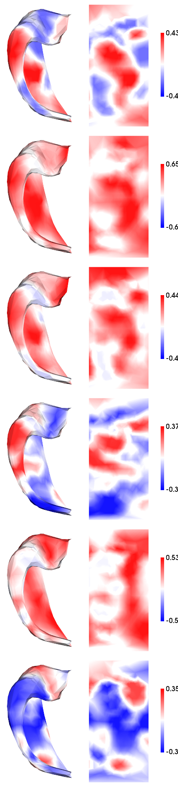
[92]:
from scipy.stats import ttest_1samp
t = ttest_1samp(contrasts_patternsep2.reshape((np.sum(shp),2*len(subs),len(contrastnames_patternsep2))),0,axis=1)
tmap = np.zeros(t[1].shape)
tmap[t[1]<(0.05)] = 1
tmap[t[1]<(0.01)] = 2
tmap[t[1]<(0.001)] = 3
plotting.surfplot_canonical_foldunfold(tmap, den='2mm', labels=labels, hemis=['L'], tighten_cwindow=True, unfoldAPrescale=True, cmap='inferno', share='row', color_range=(0,3), color_bar='right', embed_nb=True)
[92]:
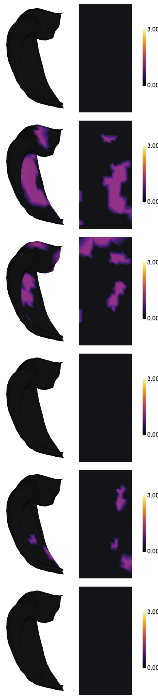
[69]:
#save the average maps
# Select the corrected contrasts only
selected_contrastnames = contrastnames_patternsep2[-3:]
for l,label in enumerate(labels):
for contrastname_patternsep2 in selected_contrastnames:
contrast_idx = contrastnames_patternsep2.index(contrastname_patternsep2)
cdat = np.nanmean(contrasts_patternsep2[ind[l],:,:,contrast_idx],axis=(1,2)).flatten()
data_array = nib.gifti.GiftiDataArray(data=cdat)
image = nib.gifti.GiftiImage()
image.add_gifti_data_array(data_array)
nib.save(image, f'../maps/HippoMaps-initializationMaps/Dataset-PNI/MRI-7T-tfMRI-MST2_average-20_hemi-mix_den-2mm_label-{label}_contrast-{contrastname_patternsep2}.shape.gii')
[69]:
mfcorr = []
sdfcorr = []
corr = np.zeros((len(subs),len(subs),2,len(contrastnames_patternsep2)))
fig, ax = plt.subplots(nrows=1, ncols=len(contrastnames_patternsep2), figsize=(3*len(contrastnames_patternsep2),3))
for h,hemi in enumerate(hemis):
for f,feature in enumerate(contrastnames_patternsep2):
cdat = contrasts_patternsep2[:,h,:,f].reshape((np.sum(shp),-1))
corr[:,:,h,f] = np.corrcoef(cdat.T)
fcorr = corr[:,:,h,f][np.triu_indices(len(subs),k=1)]
ax[f].hist(fcorr)
mfcorr.append(np.nanmean(fcorr))
sdfcorr.append(np.nanstd(fcorr))
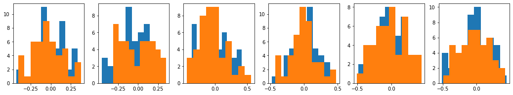
[70]:
xnames = contrastnames_patternsep2 + contrastnames_patternsep2
fig, ax = plt.subplots(nrows=1, ncols=1, figsize=(3*len(xnames),3))
plt.bar(range(len(xnames)),mfcorr)
plt.errorbar(range(len(xnames)),mfcorr, yerr=sdfcorr, fmt=".")
plt.xticks(ticks=range(len(xnames)),labels=xnames,rotation=30);
plt.axhline(y=0, color='k', linestyle='--')
[70]:
<matplotlib.lines.Line2D at 0x7f98dbf98cd0>
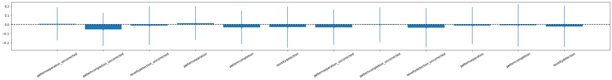
[10]:
#compute average across subjects for each contrasts and plot neocortical findings
contrasts_patternsep2_neo = np.ones((200, 2, len(subs), len(contrastnames_patternsep2))) * np.nan
for s, sub in enumerate(subs):
for h, hemi in enumerate(hemis):
for c, contrast_name in enumerate(contrastnames_patternsep2):
contrast_file = f'{hippunfold_dir}/sub-{sub}/surf/task-fMRI/patternsep2/sub-{sub}_hemi-{hemi}_space-T1w_den-2mm_label-schaefer-400_task-patternsep2_contrast-{contrast_name}.shape.gii'
try:
data = nib.load(contrast_file).darrays[0].data
contrasts_patternsep2_neo[:,h, s, c] = data
except FileNotFoundError:
print(f'Contrast file not found for subject {sub}, hemi {hemi}, contrast {contrastname_patternsep2}')
[76]:
a=np.nanmean(contrasts_patternsep2_neo,axis=2)
reshaped_a = a.reshape(a.shape[0]* a.shape[1] , a.shape[2])
mapped_data = []
for i in range(reshaped_a.shape[1]):
mapped = map_to_labels(reshaped_a[:, i], labels_c69, fill=np.nan, mask=mask_c69)
mapped_data.append(mapped)
plot_hemispheres( c69_inf_lh, c69_inf_rh,array_name=mapped_data,
size=(800,200*len(mapped_data)), color_bar=True, cmap='bwr', color_range='sym', embed_nb=True, nan_color=(1, 1, 1, 1))
[76]:
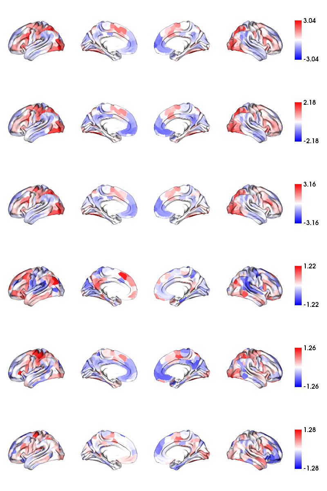
[12]:
mfcorr = []
sdfcorr = []
corr = np.zeros((len(subs)*2,len(subs)*2,len(contrastnames_patternsep2)))
fig, ax = plt.subplots(nrows=1, ncols=len(contrastnames_patternsep2), figsize=(3*len(contrastnames_patternsep2),3))
for f,feature in enumerate(contrastnames_patternsep2):
cdat = contrasts_patternsep2_neo[:,:,:,f].reshape((200,-1))
corr[:,:,f] = np.corrcoef(cdat.T)
fcorr = corr[:,:,f][np.triu_indices(len(subs)*2,k=1)]
ax[f].hist(fcorr)
mfcorr.append(np.nanmean(fcorr))
sdfcorr.append(np.nanstd(fcorr))
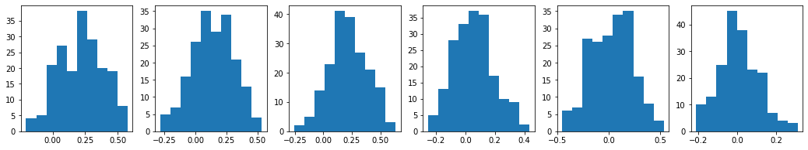
[13]:
xnames = contrastnames_patternsep2
fig, ax = plt.subplots(nrows=1, ncols=1, figsize=(3*len(contrastnames_patternsep2),3))
plt.bar(range(len(contrastnames_patternsep2)),mfcorr)
plt.errorbar(range(len(contrastnames_patternsep2)),mfcorr, yerr=sdfcorr, fmt=".")
plt.xticks(ticks=range(len(contrastnames_patternsep2)),labels=xnames,rotation=30);
plt.axhline(y=0, color='k', linestyle='--')
#plt.ylim([0,.9]);
[13]:
<matplotlib.lines.Line2D at 0x7f98cd4cf940>
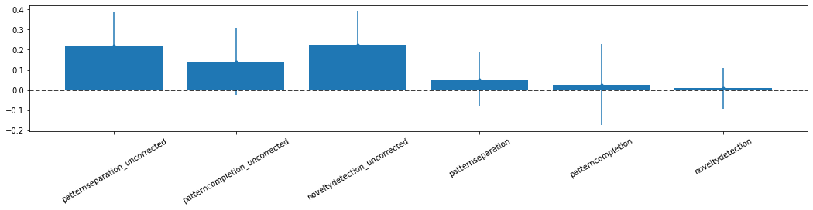
2.0 GLM fit for episodic retrieval
[15]:
conditions = ['remembered', 'forgotten']
current_task='epiretrieve'
for sub in subs:
# Specify the timing of fmri frames
motion_reg=np.loadtxt(f'{micapipe_dir}/sub-{sub}/ses-{ses}/func/desc-me_task-epiretrieve_bold/volumetric/sub-{sub}_ses-{ses}_space-func_desc-me.1D')
frame_times = t_r * (np.arange(motion_reg.shape[0]) + slice_time_ref)
### create design matrix ###
# Load event files
events_file = f'{micapipe_raw}/sub-{sub}/ses-{ses}/func/sub-{sub}_ses-{ses}_task-retrieval_events.tsv'
events = pd.read_table(events_file)
# Recode events to include fixation, stimulus, key press/response to soak up variance
df = events[['event_1_onset','event_1_duration','event_2_onset', 'event_2_duration','event_3_onset','response_time','accuracy']]
df.rename(columns={'event_1_onset': 'fixation', 'event_1_duration': 'fixation_dur','event_2_onset': 'onset', 'event_2_duration': 'duration','event_3_onset': 'keypress','accuracy': 'trial_type'}, inplace=True)
# Recode accuracy
mapping = {0: 'forgotten', 1: 'remembered'}
df['trial_type'] = df['trial_type'].replace(mapping)
design_matrix = make_first_level_design_matrix(frame_times,
events=df,
hrf_model='spm + derivative + dispersion',
add_regs=motion_reg
)
# in case of some trial types missing, add extras with all 0sL
for condition in conditions:
if condition not in design_matrix.columns:
# Create columns for condition, its derivatives, and dispersion
design_matrix[condition] = 0
design_matrix[f'{condition}_derivative'] = 0
design_matrix[f'{condition}_dispersion'] = 0
### define contrasts of interest ###
contrast_matrix = np.eye(design_matrix.shape[1])
basic_contrasts = dict([(column, contrast_matrix[i])
for i, column in enumerate(design_matrix.columns)])
contrasts = {
'retrieval_uncorrected': (
basic_contrasts['remembered']
+ basic_contrasts['remembered_derivative']
+ basic_contrasts['remembered_dispersion']),
'retrieval_corrected': (
basic_contrasts['remembered']
- basic_contrasts['forgotten']
+ basic_contrasts['remembered_derivative']
- basic_contrasts['forgotten_derivative']
+ basic_contrasts['remembered_dispersion']
+ basic_contrasts['forgotten_dispersion'])}
### Load the hippocampal/dentate timeseries ###
# Load the neocortical timeseries and downsample to schaefer 400 space
fmri_img_neo = nib.load(f'{micapipe_dir}/sub-{sub}/ses-{ses}/func/desc-me_task-epiretrieve_bold/surf/sub-{sub}_ses-{ses}_surf-fsLR-32k_desc-timeseries_clean.shape.gii').darrays[0].data
texture_neo = np.ones((fmri_img_neo.shape[0], 400))
for i in range(400):
texture_neo[:, i] = np.nanmean(fmri_img_neo[:, parc == (i + 1)], axis=1)
neo_tsL = texture_neo[:, :200]
neo_tsR = texture_neo[:, 200:]
for h, hemi in enumerate(hemis):
cdata_hipp = nib.load(f'{hippunfold_dir}/sub-{sub}/surf/task-fMRI/epiretrieve/sub-{sub}_hemi-{hemi}_space-T1w_den-2mm_label-hipp_epiretrieve_smooth-3mm.func.gii').darrays[0].data
cdata_dg = nib.load(f'{hippunfold_dir}/sub-{sub}/surf/task-fMRI/epiretrieve/sub-{sub}_hemi-{hemi}_space-T1w_den-2mm_label-dentate_epiretrieve_smooth-3mm.func.gii').darrays[0].data
# Concatenate neocortical hippocampal timeseries column-wise
if hemi == 'L':
combined_array = np.hstack((neo_tsL, cdata_hipp, cdata_dg))
else:
combined_array = np.hstack((neo_tsR, cdata_hipp, cdata_dg))
### fit the design matrix to the data
labels_, estimates = run_glm(combined_array[0:210, :], design_matrix.values[0:210])
### run contrasts of interest
for index, (contrast_id, contrast_val) in enumerate(contrasts.items()):
# Compute contrast-related statistics
contrast = compute_contrast(labels_, estimates, contrast_val,
contrast_type='t')
# We present the Z-transform of the t map
z_score = contrast.z_score()
create_nifti_image(z_score, sub, hemi, contrast_id, hippunfold_dir)
[16]:
# plot design matrix of the last subject
plt.figure(figsize=(12, 6))
plt.imshow(design_matrix.values, aspect='auto', cmap='seismic', vmin=-1, vmax=1)
plt.title(f'Design Matrix for Subject {sub}')
plt.xticks(range(len(design_matrix.columns)), design_matrix.columns, rotation=90)
plt.xlabel('Regressors')
plt.ylabel('Time Points')
plt.colorbar(label='Regressor Values')
plt.show()
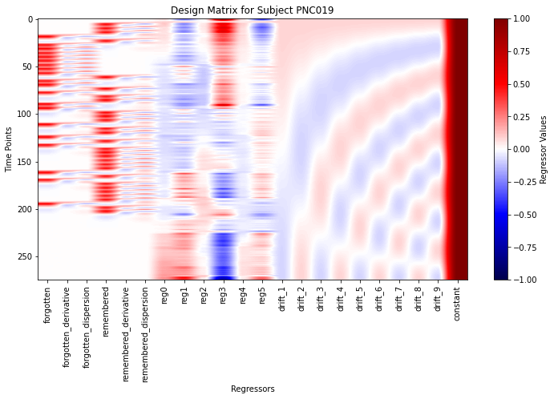
2.1 Plot to surfaces
[22]:
#compute average across subjects and hemispheres for each contrasts and plot hippocampal findings
contrastnames_epiretrieve=list(contrasts.keys())
contrasts_retrieval = np.ones((np.sum(shp), 2, len(subs), len(contrastnames_epiretrieve))) * np.nan
for s, sub in enumerate(subs):
for h, hemi in enumerate(hemis):
for l, label in enumerate(labels):
for c, contrast_name in enumerate(contrastnames_epiretrieve):
contrast_file = f'{hippunfold_dir}/sub-{sub}/surf/task-fMRI/epiretrieve/sub-{sub}_hemi-{hemi}_space-T1w_den-2mm_label-{label}_task-epiretrieve_contrast-{contrast_name}.shape.gii'
try:
data = nib.load(contrast_file).darrays[0].data
contrasts_retrieval[ind[l], h, s, c] = data
except FileNotFoundError:
print(f'Contrast file not found for subject {sub}, hemi {hemi}, label {label}, contrast {contrastname_epiretrieve}')
[87]:
plotting.surfplot_canonical_foldunfold(np.nanmean(contrasts_retrieval,axis=(1,2)), den='2mm', hemis=['L'], labels=labels, tighten_cwindow=True, cmap='bwr', color_range='sym', unfoldAPrescale=True, share='row', color_bar='right', embed_nb=True)
[87]:

[91]:
from scipy.stats import ttest_1samp
t = ttest_1samp(contrasts_retrieval.reshape((np.sum(shp),2*len(subs),len(contrastnames_epiretrieve))),0,axis=1)
tmap = np.zeros(t[1].shape)
tmap[t[1]<(0.05)] = 1
tmap[t[1]<(0.01)] = 2
tmap[t[1]<(0.001)] = 3
plotting.surfplot_canonical_foldunfold(tmap, den='2mm', labels=labels, hemis=['L'], tighten_cwindow=True, unfoldAPrescale=True, cmap='inferno', share='row', color_range=(0,3), color_bar='right', embed_nb=True)
[91]:

[84]:
#save the average maps
# Select the corrected contrasts only
selected_contrastnames = contrastnames_epiretrieve[-1:]
for l,label in enumerate(labels):
for contrastname_epiretrieve in selected_contrastnames:
contrast_idx = contrastnames_epiretrieve.index(contrastname_epiretrieve)
cdat = np.nanmean(contrasts_epiretrieve[ind[l],:,:,contrast_idx],axis=(1,2)).flatten()
data_array = nib.gifti.GiftiDataArray(data=cdat)
image = nib.gifti.GiftiImage()
image.add_gifti_data_array(data_array)
nib.save(image, f'../maps/HippoMaps-initializationMaps/Dataset-PNI/MRI-7T-tfMRI-epiretrieve_average-20_hemi-mix_den-2mm_label-{label}_contrast-{contrastname_epiretrieve}.shape.gii')
[71]:
mfcorr = []
sdfcorr = []
corr = np.zeros((len(subs),len(subs),2,len(contrastnames_epiretrieve)))
fig, ax = plt.subplots(nrows=1, ncols=len(contrastnames_epiretrieve), figsize=(3*len(contrastnames_epiretrieve),3))
for h,hemi in enumerate(hemis):
for f,feature in enumerate(contrastnames_epiretrieve):
cdat = contrasts_retrieval[:,h,:,f].reshape((np.sum(shp),-1))
corr[:,:,h,f] = np.corrcoef(cdat.T)
fcorr = corr[:,:,h,f][np.triu_indices(len(subs),k=1)]
ax[f].hist(fcorr)
mfcorr.append(np.nanmean(fcorr))
sdfcorr.append(np.nanstd(fcorr))

[72]:
xnames = contrastnames_epiretrieve + contrastnames_epiretrieve
fig, ax = plt.subplots(nrows=1, ncols=1, figsize=(3*len(xnames),3))
plt.bar(range(len(xnames)),mfcorr)
plt.errorbar(range(len(xnames)),mfcorr, yerr=sdfcorr, fmt=".")
plt.xticks(ticks=range(len(xnames)),labels=xnames,rotation=30);
plt.axhline(y=0, color='k', linestyle='--')
#plt.ylim([0,.9]);
[72]:
<matplotlib.lines.Line2D at 0x7f98ce959d30>

[29]:
#compute average across subjects for each contrasts and plot neocortical findings
contrasts_retrieval_neo = np.ones((200, 2, len(subs), len(contrastnames_epiretrieve))) * np.nan
for s, sub in enumerate(subs):
for h, hemi in enumerate(hemis):
for c, contrast_name in enumerate(contrastnames_epiretrieve):
contrast_file = f'{hippunfold_dir}/sub-{sub}/surf/task-fMRI/epiretrieve/sub-{sub}_hemi-{hemi}_space-T1w_den-2mm_label-schaefer-400_task-epiretrieve_contrast-{contrast_name}.shape.gii'
try:
data = nib.load(contrast_file).darrays[0].data
contrasts_retrieval_neo[:,h, s, c] = data # Corrected indexing
except FileNotFoundError:
print(f'Contrast file not found for subject {sub}, hemi {hemi}, contrast {contrastname_epiretrieve}')
[78]:
a=np.nanmean(contrasts_retrieval_neo,axis=2)
reshaped_a = a.reshape(a.shape[0]* a.shape[1] , a.shape[2])
# vertices to parcels
mapped_data = []
for i in range(reshaped_a.shape[1]):
mapped = map_to_labels(reshaped_a[:, i], labels_c69, fill=np.nan, mask=mask_c69)
mapped_data.append(mapped)
plot_hemispheres( c69_inf_lh, c69_inf_rh,array_name=mapped_data,
size=(800,200*len(mapped_data)), color_bar=True, cmap='bwr', color_range='sym', embed_nb=True, nan_color=(1, 1, 1, 1))
[78]:

[31]:
mfcorr = []
sdfcorr = []
corr = np.zeros((len(subs)*2,len(subs)*2,len(contrastnames_epiretrieve)))
fig, ax = plt.subplots(nrows=1, ncols=len(contrastnames_epiretrieve), figsize=(3*len(contrastnames_epiretrieve),3))
for f,feature in enumerate(contrastnames_epiretrieve):
cdat = contrasts_retrieval_neo[:,:,:,f].reshape((200,-1))
corr[:,:,f] = np.corrcoef(cdat.T)
fcorr = corr[:,:,f][np.triu_indices(len(subs)*2,k=1)]
ax[f].hist(fcorr)
mfcorr.append(np.nanmean(fcorr))
sdfcorr.append(np.nanstd(fcorr))

[32]:
xnames = contrastnames_epiretrieve
fig, ax = plt.subplots(nrows=1, ncols=1, figsize=(3*len(contrastnames_epiretrieve),3))
plt.bar(range(len(contrastnames_epiretrieve)),mfcorr)
plt.errorbar(range(len(contrastnames_epiretrieve)),mfcorr, yerr=sdfcorr, fmt=".")
plt.xticks(ticks=range(len(contrastnames_epiretrieve)),labels=xnames,rotation=30);
plt.axhline(y=0, color='k', linestyle='--')
#plt.ylim([0,.9]);
[32]:
<matplotlib.lines.Line2D at 0x7f98ddb02c10>

3. GLM fit for episodic encoding -subsequent memory
[34]:
conditions = ['correct', 'incorrect']
current_task='epiencode'
for sub in subs:
# Specify the timing of fmri frames from one example
motion_reg=np.loadtxt(f'{micapipe_dir}/sub-{sub}/ses-{ses}/func/desc-me_task-epiencode_bold/volumetric/sub-{sub}_ses-{ses}_space-func_desc-me.1D')
frame_times = t_r * (np.arange(motion_reg.shape[0]) + slice_time_ref)
### create design matrix ###
# Load encoding file
encoding_file = f'{micapipe_raw}/sub-{sub}/ses-{ses}/func/sub-{sub}_ses-{ses}_task-encoding_events.tsv'
df_encode = pd.read_table(encoding_file)
df_encode= df_encode[['event_1_onset','event_1_duration','event_2_onset', 'stim_dur','stim_1','stim_2']]
df_encode.rename(columns={'event_1_onset': 'fixation', 'event_1_duration': 'fixation_dur','event_2_onset': 'onset', 'stim_dur': 'duration'}, inplace=True)
# Load retrieval file
retrieval_file = f'{micapipe_raw}/sub-{sub}/ses-{ses}/func/sub-{sub}_ses-{ses}_task-retrieval_events.tsv'
df_retrieve = pd.read_table(retrieval_file)
df_retrieve=df_retrieve[['event_1_onset', 'event_1_duration', 'event_2_onset', 'event_2_duration', 'prime', 'target', 'accuracy', 'event_3_onset']]
df_retrieve.rename(columns={'event_1_onset': 'fixation', 'event_1_duration': 'fixation_dur', 'event_2_onset': 'onset', 'event_2_duration': 'duration', 'event_3_onset': 'keypress','accuracy': 'trial_type'}, inplace=True)
mapping = {0: 'incorrect', 1: 'correct'}
df_retrieve['trial_type'] = df_retrieve['trial_type'].replace(mapping)
new_df = pd.DataFrame(columns=['onset','duration','prime','target','trial_type'])
# Dictionary to keep track of matched rows in df_retrieve
matched_rows_dict = {}
# Iterate through rows in encoding data
i=0
for index, row_encode in df_encode.iterrows():
stim_1 = row_encode['stim_1']
stim_2 = row_encode['stim_2']
# Check if this pair has already been matched
if (stim_1, stim_2) not in matched_rows_dict:
# Match rows in retrieval data based on stim_1 and stim_2
match_rows = df_retrieve[(df_retrieve['prime'] == stim_1) & (df_retrieve['target'] == stim_2)]
# If there is exactly one match, append the data to the design matrix
if len(match_rows) == 1:
matched_row = match_rows.iloc[0]
new_df.loc[i] = [row_encode['onset'],
row_encode['duration'],
matched_row['prime'],
matched_row['target'],
matched_row['trial_type']]
i+=1
# Update the matched_rows_dict to mark this pair as matched
matched_rows_dict[(stim_1, stim_2)] = True
else:
# If there is no match or multiple matches, mark this pair as unmatched
matched_rows_dict[(stim_1, stim_2)] = False
design_matrix = make_first_level_design_matrix(frame_times,
events=new_df,
hrf_model='spm + derivative + dispersion',
add_regs=motion_reg)
for condition in conditions:
if condition not in design_matrix.columns:
design_matrix[condition] = 0
design_matrix[f'{condition}_derivative'] = 0
design_matrix[f'{condition}_dispersion'] = 0
### define contrasts of interest ###
contrast_matrix = np.eye(design_matrix.shape[1])
basic_contrasts = dict([(column, contrast_matrix[i])
for i, column in enumerate(design_matrix.columns)])
contrasts = {
'subsequent_memory_uncorrected': (
basic_contrasts['correct']
+ basic_contrasts['correct_derivative']
+ basic_contrasts['correct_dispersion']),
'subsequent_memory_corrected': (
basic_contrasts['correct']
- basic_contrasts['incorrect']
+ basic_contrasts['correct_derivative']
- basic_contrasts['incorrect_derivative']
+ basic_contrasts['correct_dispersion']
- basic_contrasts['incorrect_dispersion'])}
### Load the hippocampal/dentate timeseries ###
# Load the neocortical timeseries
fmri_img_neo = nib.load(f'{micapipe_dir}/sub-{sub}/ses-{ses}/func/desc-me_task-epiencode_bold/surf/sub-{sub}_ses-{ses}_surf-fsLR-32k_desc-timeseries_clean.shape.gii').darrays[0].data
texture_neo = np.ones((fmri_img_neo.shape[0], 400))
for i in range(400):
texture_neo[:, i] = np.nanmean(fmri_img_neo[:, parc == (i + 1)], axis=1)
neo_tsL = texture_neo[:, :200]
neo_tsR = texture_neo[:, 200:]
for h, hemi in enumerate(hemis):
cdata_hipp = nib.load(f'{hippunfold_dir}/sub-{sub}/surf/task-fMRI/epiencode/sub-{sub}_hemi-{hemi}_space-T1w_den-2mm_label-hipp_epiencode_smooth-3mm.func.gii').darrays[0].data
cdata_dg = nib.load(f'{hippunfold_dir}/sub-{sub}/surf/task-fMRI/epiencode/sub-{sub}_hemi-{hemi}_space-T1w_den-2mm_label-dentate_epiencode_smooth-3mm.func.gii').darrays[0].data
# Concatenate neocortical hippocampal timeseries column-wise
if hemi == 'L':
combined_array = np.hstack((neo_tsL, cdata_hipp, cdata_dg))
else:
combined_array = np.hstack((neo_tsR, cdata_hipp, cdata_dg))
### fit the design matrix to the data
labels_, estimates = run_glm(combined_array[0:210, :], design_matrix.values[0:210])
### run contrasts of interest
for index, (contrast_id, contrast_val) in enumerate(contrasts.items()):
# Compute contrast-related statistics
contrast = compute_contrast(labels_, estimates, contrast_val,
contrast_type='t')
# We present the Z-transform of the t map
z_score = contrast.z_score()
create_nifti_image(z_score, sub, hemi, contrast_id, hippunfold_dir)
[35]:
# plot design matrix of the last subject
plt.figure(figsize=(12, 6))
plt.imshow(design_matrix.values, aspect='auto', cmap='seismic', vmin=-1, vmax=1)
plt.title(f'Design Matrix for Subject {sub}')
plt.xticks(range(len(design_matrix.columns)), design_matrix.columns, rotation=90)
plt.xlabel('Regressors')
plt.ylabel('Time Points')
plt.colorbar(label='Regressor Values')
plt.show()
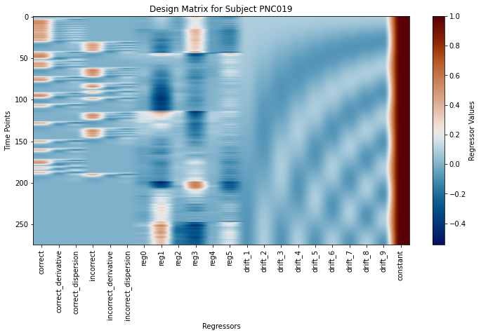
3.1 Plot to surfaces
[38]:
#compute average across subjects and hemispheres for each contrasts and plot hippocampal findings
contrastnames_epiencode=list(contrasts.keys())
contrasts_epiencode = np.ones((np.sum(shp), 2, len(subs), len(contrastnames_epiencode))) * np.nan
for s, sub in enumerate(subs):
for h, hemi in enumerate(hemis):
for l, label in enumerate(labels):
for c, contrast_name in enumerate(contrastnames_epiencode):
contrast_file = f'{hippunfold_dir}/sub-{sub}/surf/task-fMRI/epiencode/sub-{sub}_hemi-{hemi}_space-T1w_den-2mm_label-{label}_task-epiencode_contrast-{contrast_name}.shape.gii'
try:
data = nib.load(contrast_file).darrays[0].data
contrasts_epiencode[ind[l], h, s, c] = data
except FileNotFoundError:
print(f'Contrast file not found for subject {sub}, hemi {hemi}, label {label}, contrast {contrastname_epiencode}')
[89]:
plotting.surfplot_canonical_foldunfold(np.nanmean(contrasts_epiencode,axis=(1,2)), den='2mm', hemis=['L'], labels=labels, tighten_cwindow=True, cmap='bwr', color_range='sym', unfoldAPrescale=True, share='row', color_bar='right', embed_nb=True)
[89]:
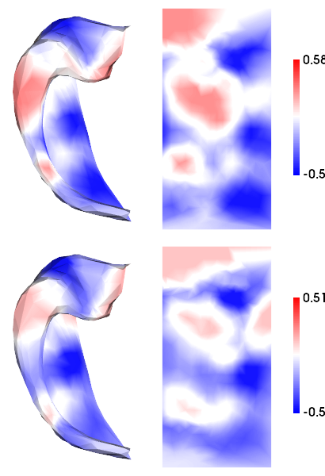
[90]:
from scipy.stats import ttest_1samp
t = ttest_1samp(contrasts_epiencode.reshape((np.sum(shp),2*len(subs),len(contrastnames_epiencode))),0,axis=1)
tmap = np.zeros(t[1].shape)
tmap[t[1]<(0.05)] = 1
tmap[t[1]<(0.01)] = 2
tmap[t[1]<(0.001)] = 3
plotting.surfplot_canonical_foldunfold(tmap, den='2mm', labels=labels, hemis=['L'], tighten_cwindow=True, unfoldAPrescale=True, cmap='inferno', share='row', color_range=(0,3), color_bar='right', embed_nb=True)
[90]:
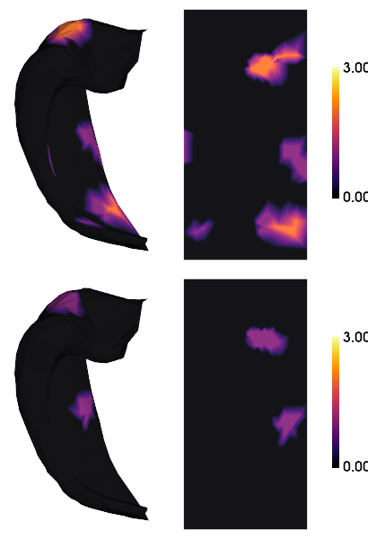
[9]:
#save the average maps
# Select the corrected contrasts only
selected_contrastnames = contrastnames_epiencode[-1:]
for l,label in enumerate(labels):
for contrastname_epiencode in selected_contrastnames:
contrast_idx = contrastnames_epiencode.index(contrastname_epiencode)
cdat = np.nanmean(contrasts_epiencode[ind[l],:,:,contrast_idx],axis=(1,2)).flatten()
data_array = nib.gifti.GiftiDataArray(data=cdat)
image = nib.gifti.GiftiImage()
image.add_gifti_data_array(data_array)
nib.save(image, f'../maps/HippoMaps-initializationMaps/Dataset-PNI/MRI-7T-tfMRI-epiencode_average-20_hemi-mix_den-2mm_label-{label}_contrast-{contrastname_epiencode}.shape.gii')
[73]:
mfcorr = []
sdfcorr = []
corr = np.zeros((len(subs),len(subs),2,len(contrastnames_epiencode)))
fig, ax = plt.subplots(nrows=1, ncols=len(contrastnames_epiencode), figsize=(3*len(contrastnames_epiencode),3))
for h,hemi in enumerate(hemis):
for f,feature in enumerate(contrastnames_epiencode):
cdat = contrasts_epiencode[:,h,:,f].reshape((np.sum(shp),-1))
corr[:,:,h,f] = np.corrcoef(cdat.T)
fcorr = corr[:,:,h,f][np.triu_indices(len(subs),k=1)]
ax[f].hist(fcorr)
mfcorr.append(np.nanmean(fcorr))
sdfcorr.append(np.nanstd(fcorr))
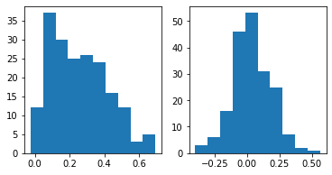
[74]:
xnames = contrastnames_epiencode + contrastnames_epiencode
fig, ax = plt.subplots(nrows=1, ncols=1, figsize=(3*len(xnames),3))
plt.bar(range(len(xnames)),mfcorr)
plt.errorbar(range(len(xnames)),mfcorr, yerr=sdfcorr, fmt=".")
plt.xticks(ticks=range(len(xnames)),labels=xnames,rotation=30);
plt.axhline(y=0, color='k', linestyle='--')
#plt.ylim([0,.9]);
[74]:
<matplotlib.lines.Line2D at 0x7f98cea11550>

[42]:
#compute average across subjects for each contrasts and plot neocortical findings
contrasts_epiencode_neo = np.ones((200, 2, len(subs), len(contrastnames_epiencode))) * np.nan
for s, sub in enumerate(subs):
for h, hemi in enumerate(hemis):
for c, contrast_name in enumerate(contrastnames_epiencode):
contrast_file = f'{hippunfold_dir}/sub-{sub}/surf/task-fMRI/epiencode/sub-{sub}_hemi-{hemi}_space-T1w_den-2mm_label-schaefer-400_task-epiencode_contrast-{contrast_name}.shape.gii'
try:
data = nib.load(contrast_file).darrays[0].data
contrasts_epiencode_neo[:,h, s, c] = data # Corrected indexing
except FileNotFoundError:
print(f'Contrast file not found for subject {sub}, hemi {hemi}, contrast {contrastname_epiencode}')
[80]:
a=np.nanmean(contrasts_epiencode_neo,axis=2)
reshaped_a = a.reshape(a.shape[0]* a.shape[1] , a.shape[2])
# vertices to parcels
mapped_data = []
for i in range(reshaped_a.shape[1]):
mapped = map_to_labels(reshaped_a[:, i], labels_c69, fill=np.nan, mask=mask_c69)
mapped_data.append(mapped)
plot_hemispheres( c69_inf_lh, c69_inf_rh,array_name=mapped_data,
size=(800,200*len(mapped_data)), color_bar=True, cmap='bwr', color_range='sym', embed_nb=True, nan_color=(1, 1, 1, 1))
[80]:

[44]:
mfcorr = []
sdfcorr = []
corr = np.zeros((len(subs)*2,len(subs)*2,len(contrastnames_epiencode)))
fig, ax = plt.subplots(nrows=1, ncols=len(contrastnames_epiencode), figsize=(3*len(contrastnames_epiencode),3))
for f,feature in enumerate(contrastnames_epiencode):
cdat = contrasts_epiencode_neo[:,:,:,f].reshape((200,-1))
corr[:,:,f] = np.corrcoef(cdat.T)
fcorr = corr[:,:,f][np.triu_indices(len(subs)*2,k=1)]
ax[f].hist(fcorr)
mfcorr.append(np.nanmean(fcorr))
sdfcorr.append(np.nanstd(fcorr))

[45]:
xnames = contrastnames_epiencode
fig, ax = plt.subplots(nrows=1, ncols=1, figsize=(3*len(contrastnames_epiencode),3))
plt.bar(range(len(contrastnames_epiencode)),mfcorr)
plt.errorbar(range(len(contrastnames_epiencode)),mfcorr, yerr=sdfcorr, fmt=".")
plt.xticks(ticks=range(len(contrastnames_epiencode)),labels=xnames,rotation=30);
plt.axhline(y=0, color='k', linestyle='--')
#plt.ylim([0,.9]);
[45]:
<matplotlib.lines.Line2D at 0x7f98dc3a6820>
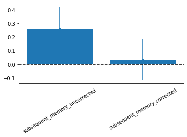
[68]:
# save everything
import shelve
filename='../checkpoints/MRI-7T-taskfMRI.out'
my_shelf = shelve.open(filename,'n') # 'n' for new
for key in dir():
try:
my_shelf[key] = globals()[key]
except:
# __builtins__, my_shelf, and imported modules can not be shelved.
print('ERROR shelving: {0}'.format(key))
my_shelf.close()
ERROR shelving: __builtin__
ERROR shelving: __builtins__
ERROR shelving: c69_inf_lh
ERROR shelving: c69_inf_rh
ERROR shelving: cmc
ERROR shelving: csv
ERROR shelving: exit
ERROR shelving: get_ipython
ERROR shelving: glob
ERROR shelving: my_shelf
ERROR shelving: nib
ERROR shelving: nilearn
ERROR shelving: np
ERROR shelving: os
ERROR shelving: pd
ERROR shelving: plotting
ERROR shelving: plt
ERROR shelving: quit
ERROR shelving: shelve
ERROR shelving: surface
ERROR shelving: sys
ERROR shelving: utils
ERROR shelving: warnings
[ ]:
# load everything
import shelve
filename='../checkpoints/MRI-7T-taskfMRI.out'
my_shelf = shelve.open(filename)
for key in my_shelf:
globals()[key]=my_shelf[key]
my_shelf.close()